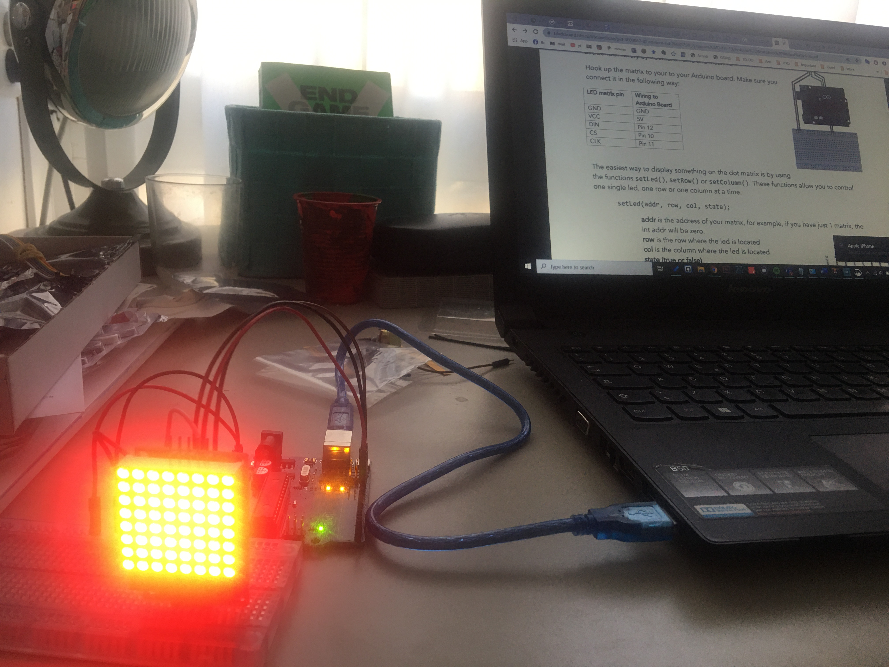

First Exercises (1-3)
During this week’s workshop we were introduced to the mysterious world of Arduino and its language.
We started off by familiarizing with its components: the main board, the breadboard, wires, LEDs, resistors and more.
In the first exercises we wrote simple coding lines and connected wires and resistors so that the LEDs would work accordingly.
Here are some pictures and videos of the first steps taken in this new part of our HCI phase:
Here is a screenshot of the first code:

Exercise 4
Secondly, we learnt how to fade the lights.
Here is a screenshot of the this exercise's code:

Exercise 6
At this point, we were introduced to the Potmeter. After figuring out how this addition could be applied into our project, we learnt how to connect it with LEDs.
Here is a screenshot of the this exercise's code:

Exercise 7
Finally, we were able to incorporate our matrix display. After exploring various way in which lights can be shown on the screen, we finished our workshop by making our own lights controled with the Potmeter.
I decided to use the smiley face and turnin it into a controled expression. When the potmeter is turned half, the face smiles, when it's turned on the other side, the screen shows a sad face.
Here is the video:
Here is a screenshot of the this exercise's code: